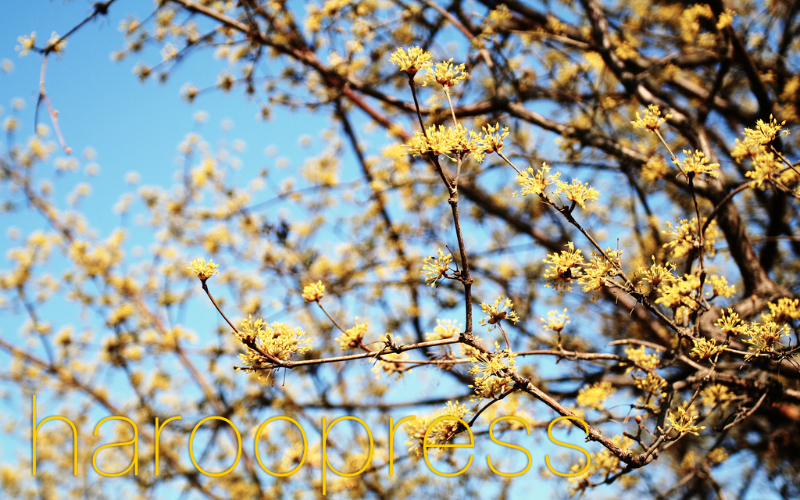

Rhio Kim, undefined
하루프레스의 가장 중요한 목표는 블로그가 필요한 사람들보다 글을 쓰는데 불필요한 서버 구성, 데이터베이스 설치 등을 잊고 글 쓰는 곳에만 몰입할 수 있도록 하는데 있다.
$ git clone git@github.com:rhiokim/haroopress.git
$ make init
[youtube:ax0Zsk3]
[jsfiddle:ccw9dz]
[twitter:1209399932479234]
